Address Manager: Geofence Audit & Redesign
A usage audit and redesign of FourKites' Address Manager, driven by geofence-recommendation performance and real customer time-on-task data.
UX Audit · Interaction Design · Data-Driven Redesign · 2 minute read
What is Address Manager?
Address Manager lets FourKites customers manage and maintain every stop address in their network: pickup, delivery, and yard facilities. Every time a customer adds a pickup or delivery stop for a load, the address is automatically updated in Address Manager. Customers can also define stop-specific business hours and load/unload time, and track the success rating of the geofences in use.
- Stores all the stop addresses
- Lets customers define the geofence for each address, which helps detect arrivals and departures
UX auditing
Home page: average time spent on the Address home page was 9m 13s per day. I pulled usage data for the top 10 customers by traffic over the prior 180 days, Unilever, Dow Chemical, Averitt Express Supply Chain Solutions, Penske Managed Transportation, Niagara Bottling, A-Z Trucking, Nestlé Mexico, Odyssey Logistics, C&S Wholesale, and Kimberly-Clark LATAM, to see exactly which features they touched most and where they got stuck.
Most used features on the page
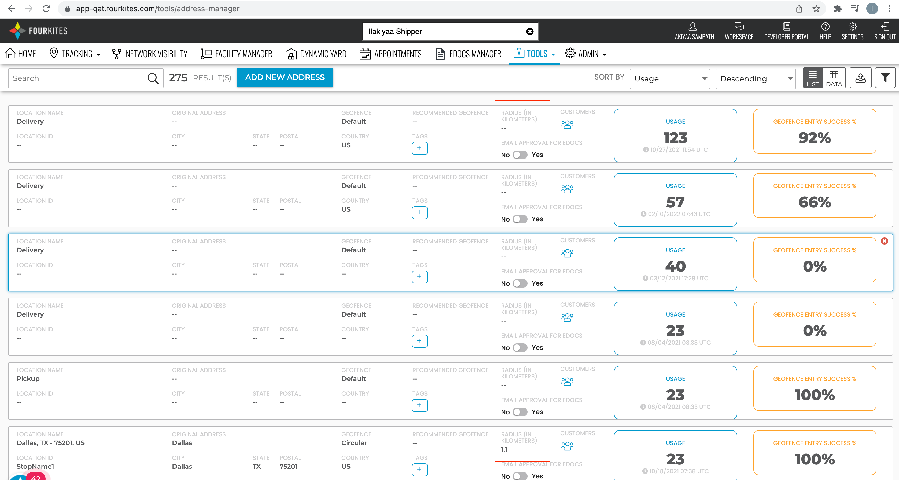
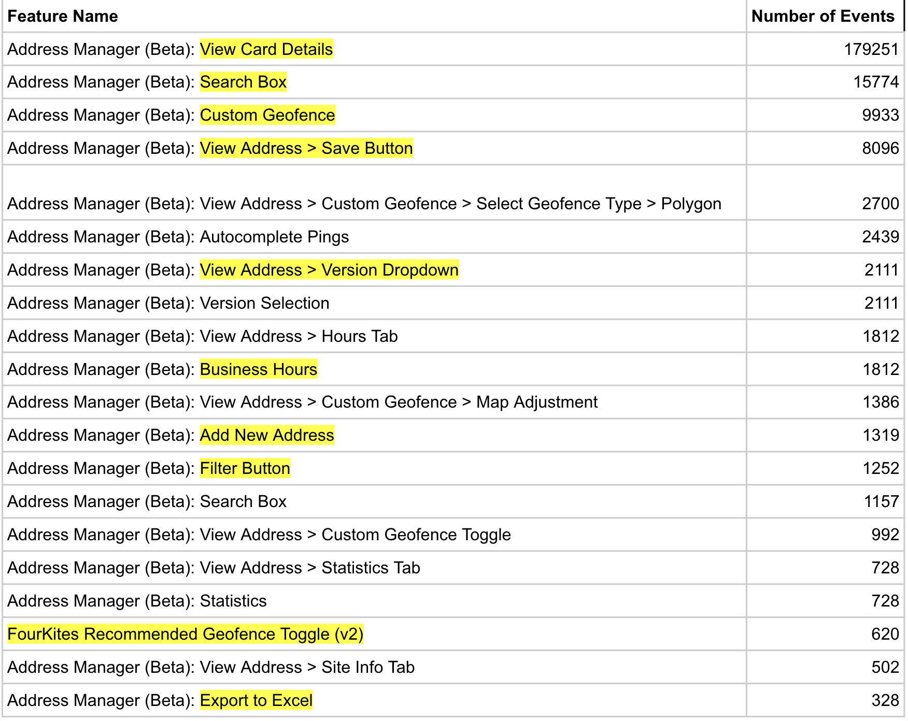
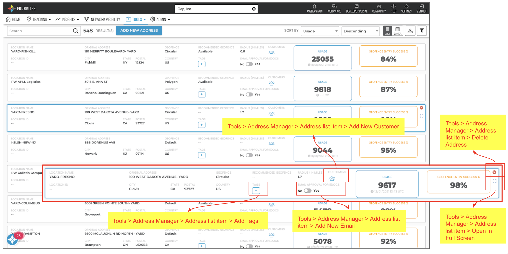
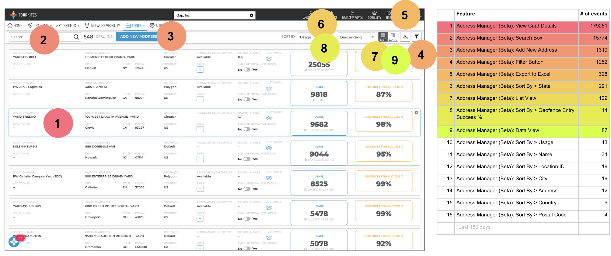
Usage in a nutshell
Total usage summary
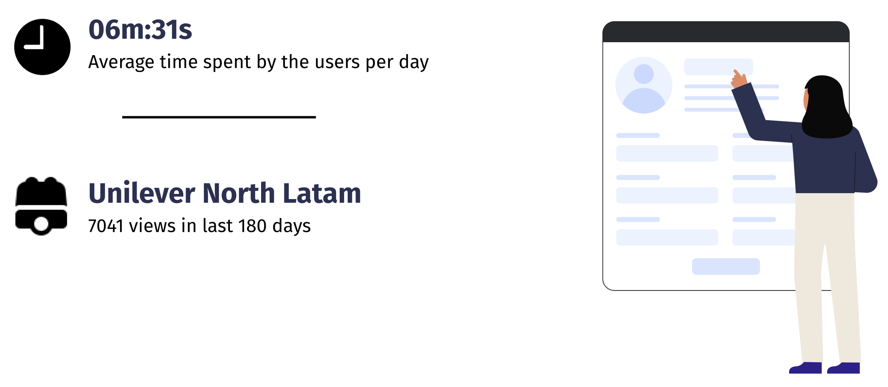
Top 10 features by views
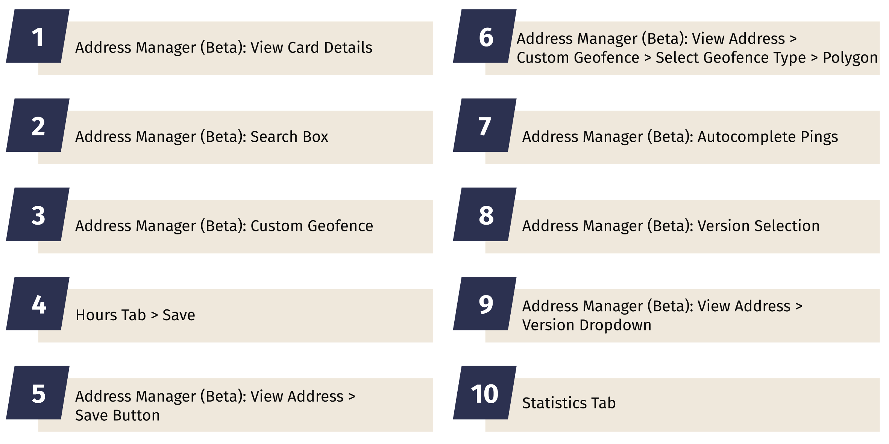
Top 10 features summary
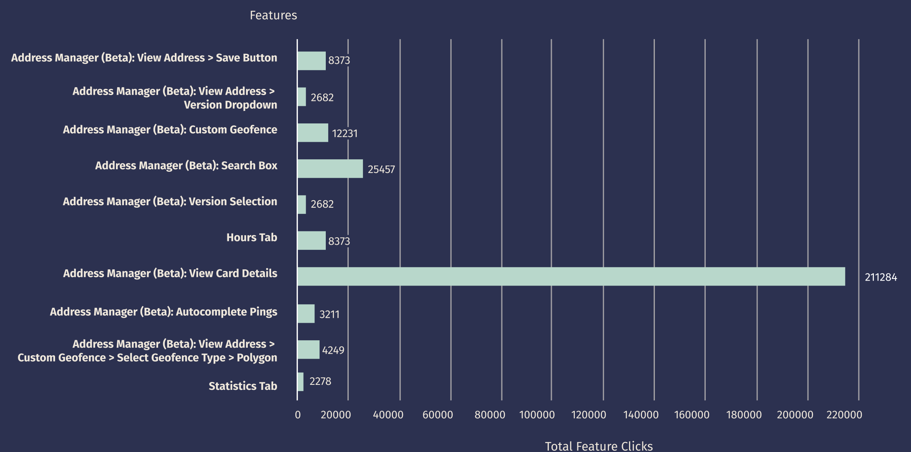
Task flow
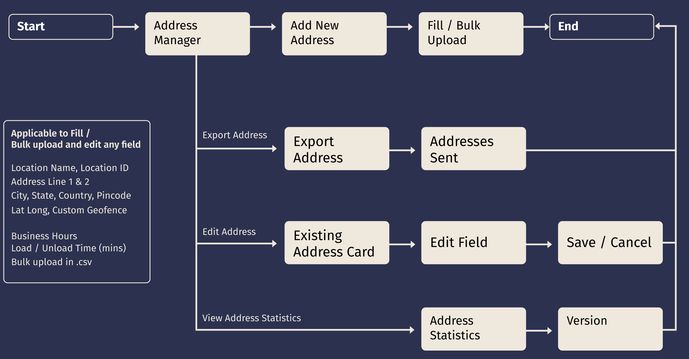
Usage metrics
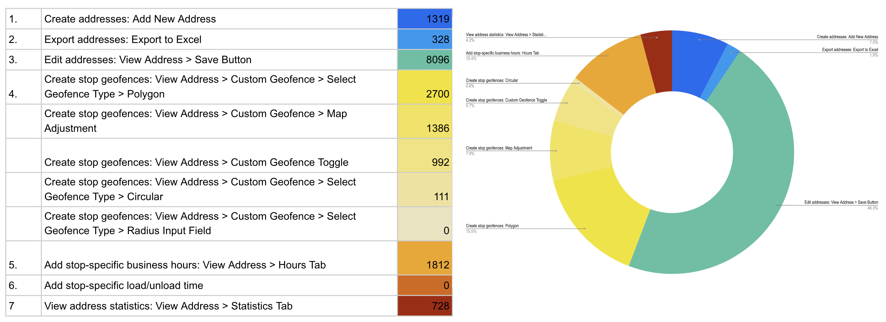
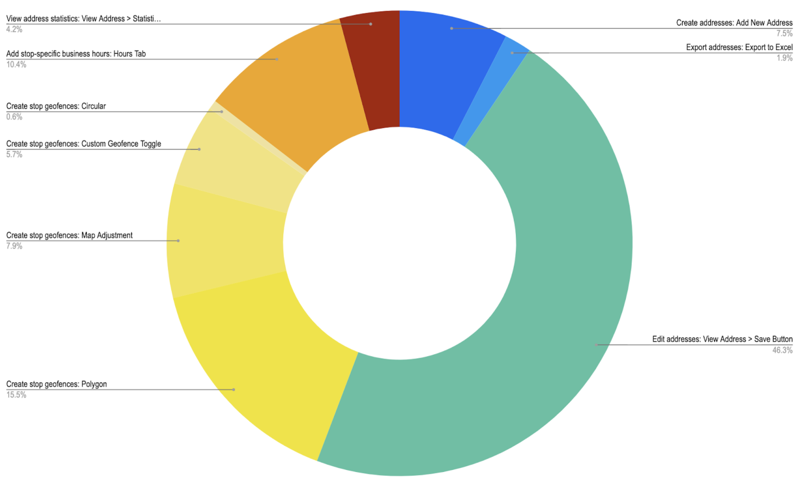
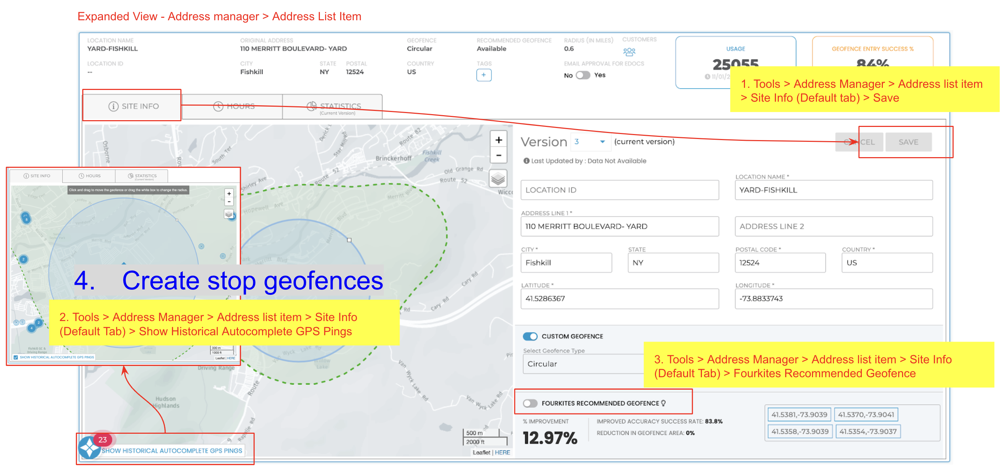
FourKites recommended geofence
Feature goals:
- Provide geofence recommendations based on the customer's own geofence performance and on better-performing geofences already in use at the same location elsewhere in the FourKites network
- Improve the success percentage of geofence entries through FourKites' recommendations
Feature success metrics:
- Average geofence success improvement
- Average reduction in geofence size
- Additional geofence entries captured with recommendations
- Expirations prevented with recommendations
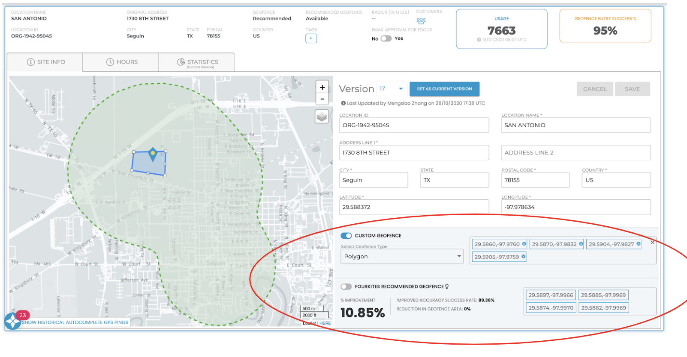
UX goal
Both goals ladder up to the same north star: delight customers by delivering measurable value, making them heroes within their organizations, and enabling them as our biggest advocates.
| Goal | Objective | Key result | Baseline | Target |
|---|---|---|---|---|
| 1 | Decrease customer investment needed to successfully track | Decrease time spent managing addresses in Address Manager by 10% (avg. minutes/month) | 9.75 min | 8.8 min |
| 2 | Improve tracking consistency by increasing geofence success rates | Improve adoption of recommended geofences to 70% of shippers with available recommendations | 24% | 70% |
Proposed design
Card view
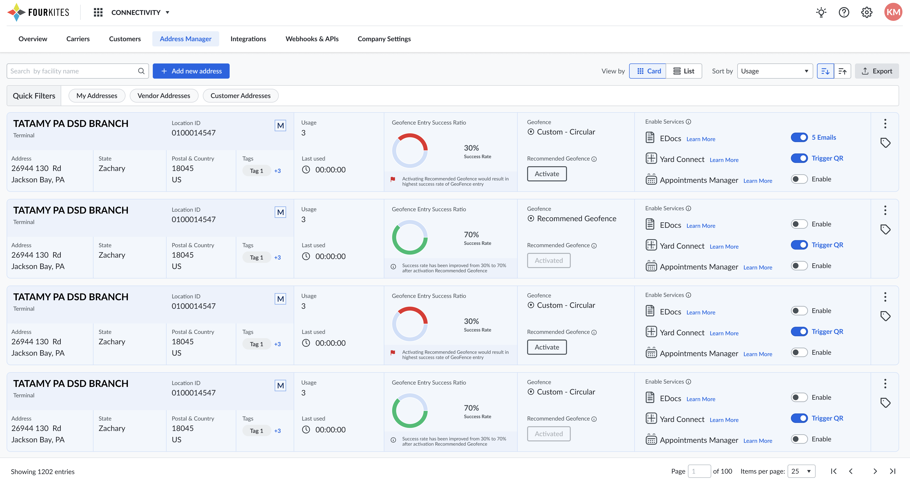
List view
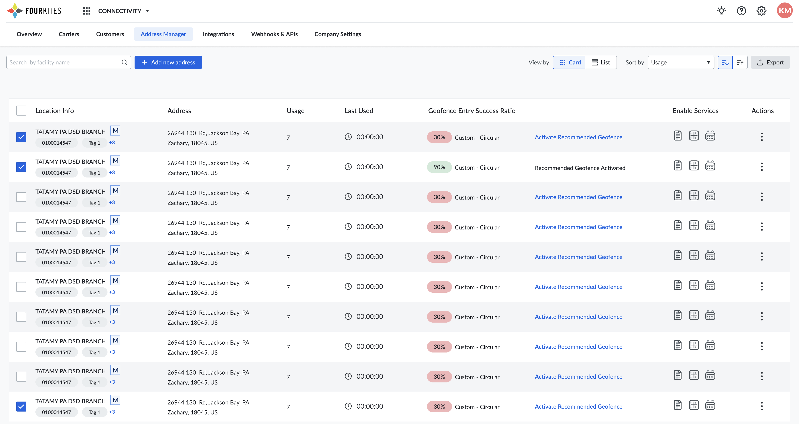
Detail view
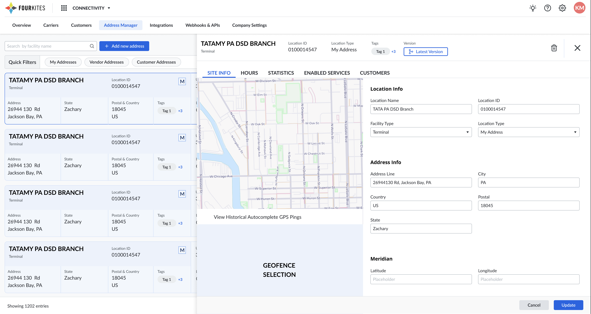
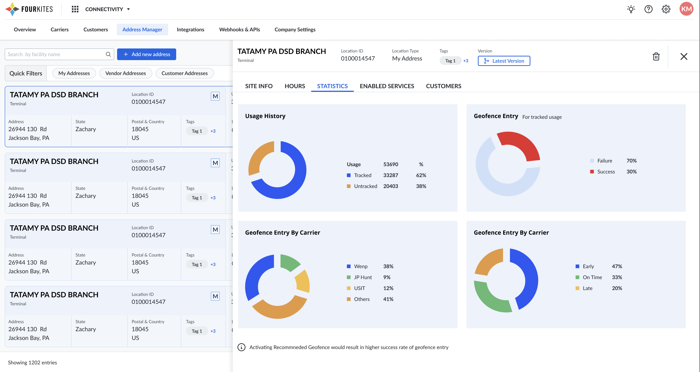
Impact
By replacing manual geofence drawing with data-backed recommendations and simplifying the card, list, and detail views around the features customers actually used, the redesign targeted the two levers that mattered most: less time spent on a task customers didn't want to be doing, and higher-quality geofences that improve tracking accuracy for every downstream customer relying on that data.